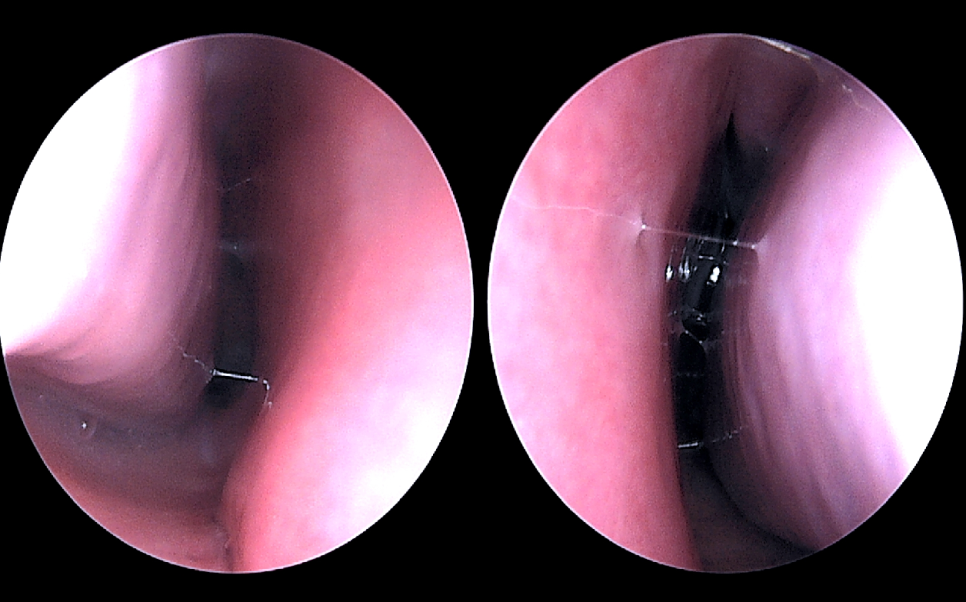
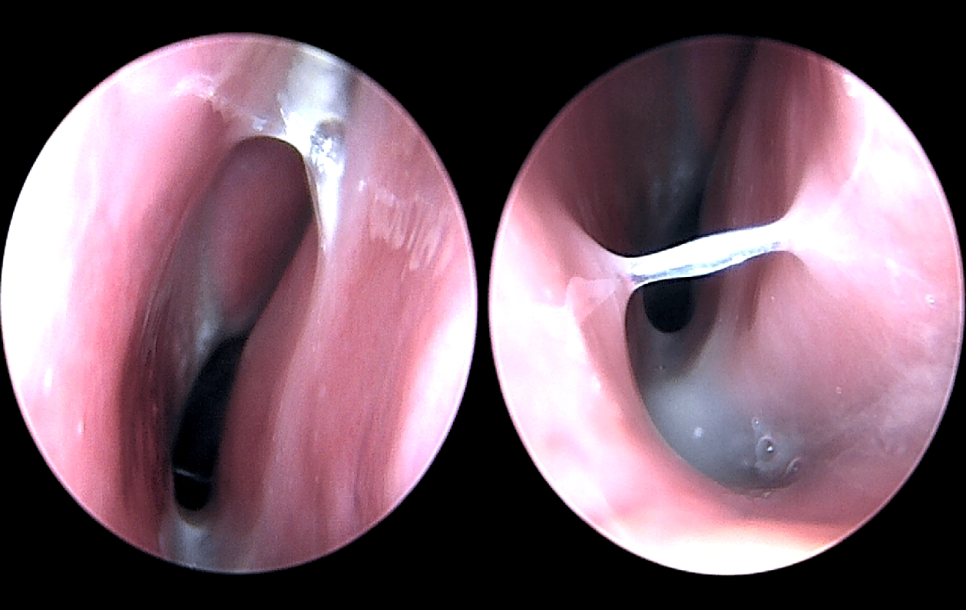
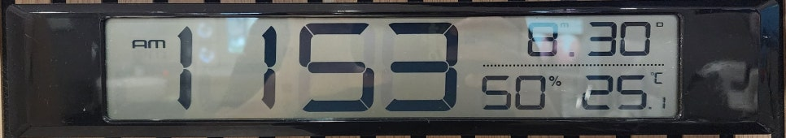

Rhinitis is a common problem, and one important part of managing it is controlling humidity. Air that is too dry or too humid can make rhinitis symptoms worse.
This article explains how humidity and rhinitis are related, and how to use humidity to ease symptoms.
In this article 5 sections · 3 min read
1. When the air is too dry
- Dry nasal lining: low humidity dries out the lining of the nose (nasal mucosa) and weakens its natural defences. Inflammation becomes more likely and rhinitis symptoms can get worse.
- Crusts: dry air makes mucus sticky, so crusts form easily. This can worsen a blocked nose or cause discomfort.
- Higher risk of respiratory infection: when the nasal lining dries out, viruses and bacteria can get in more easily, making respiratory infections more likely. This can make rhinitis symptoms worse still.
- Slower cilia: in dry conditions, the tiny hairs that line the nose (cilia) slow down or can stop moving altogether. When the cilia can't work normally, harmful substances stay in the nasal cavity, which further worsens rhinitis.
2. When the air is too humid
- More mould and house dust mites: high humidity lets mould and house dust mites multiply easily indoors. These can trigger allergic rhinitis and can also irritate the nose in people with non-allergic rhinitis.
- Worse symptoms: high humidity can make symptoms worse by encouraging mould and house dust mites.


3. How to keep humidity at the right level
- Ideal indoor humidity: an indoor humidity of about 40–50% is suitable. If you are allergic to house dust mites in particular, it is best to keep it from going above 50%.
- Humidifiers: in dry conditions a humidifier can raise humidity, but take care that it doesn't push humidity too high.
- Ventilation: when indoor humidity rises, ventilate regularly to bring it down. Pay particular attention to damp areas such as bathrooms and kitchens.

4. Managing humidity through the seasons
- Winter: heating can make indoor air very dry. If the air is dry, a properly maintained humidifier may help comfort, but monitor humidity and avoid excess moisture. Empty and dry the tank daily and clean it as directed by the manufacturer. Avoid using open boiling water for humidification because of burn risk, especially around children. However, once humidity goes above 50%, house dust mites and mould are more likely to multiply, so keeping it in the right range is important.
- Summer: high summer humidity encourages indoor mould and house dust mites, so using an air conditioner or dehumidifier to lower humidity is needed.
5. Tips to ease rhinitis symptoms
- Use a hygrometer: to manage indoor humidity properly, measure it regularly with a hygrometer.
- Saline rinses: when symptoms are bad, rinsing the nose with saline helps keep the nasal lining moist and washes out irritants. For nasal rinsing, use a suitable saline solution made with sterile or distilled water, or water that has been boiled and cooled. Do not use untreated tap water. Follow the device instructions and keep the equipment clean.
- Drink enough fluids: drinking enough water is good general health advice.
In summaryHumidity management may improve dryness and help limit dampness-related triggers, but it is only one part of rhinitis care and the benefit varies. Use a hygrometer, avoid excess moisture and seek an assessment if symptoms persist despite environmental changes.
For other approaches, see blocked nose and nasal sprays and, if you are allergic to dust mites, house dust mite sublingual immunotherapy.
This article is an English adaptation of a Korean post by Dr. OH JUNGHO. It is general health information, not a diagnosis or treatment plan.